Known for its captivating natural beauty, Corbett Tour Packages in
Nainital will get your spirit high when travelling in the exquisite
wilderness in Nainital. more...
Ranthambore Tour Packages
Ranthambore Tour is an exciting and adventurous journey that takes you
to the Ranthambore National Park, one of the most famous tiger
reserves in India.
more...
Gir Tour Packages
Get the best deals for gir tour packages special customize some
packages like gir weekend tour, sasan gir holiday tour & gir jeep
safari tour. more...
Kaziranga Tour Packages
Wildlife tours to Kaziranga- Get best deals on Kaziranga wildlife tour
packages- Explore website for various customized Kaziranga holiday
packages. more...
Kanha Tour Packages
Get best holiday deals on Kanha wildlife tour packages at WildlifeTrip
& enjoy jeep safari, Photography at kanha national park to explore the
treasure of wildlife. more...
Beach
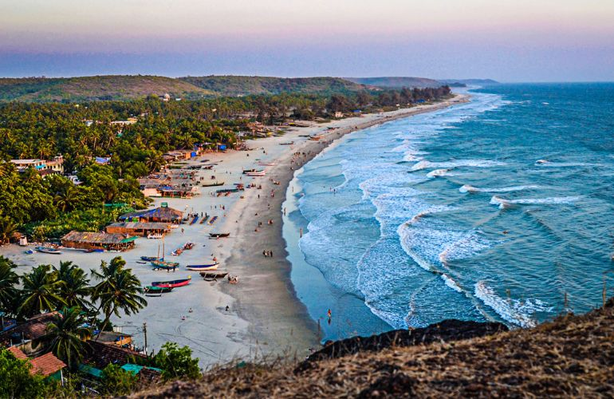
Goa Tour Packages
Goa tour packages are designed to offer travelers an unforgettable
experience in this vibrant coastal destination. With its stunning
beaches, rich culture, and vibrant nightlife, Goa is a popular choice
for tourists seeking a blend of relaxation and excitement.
more...
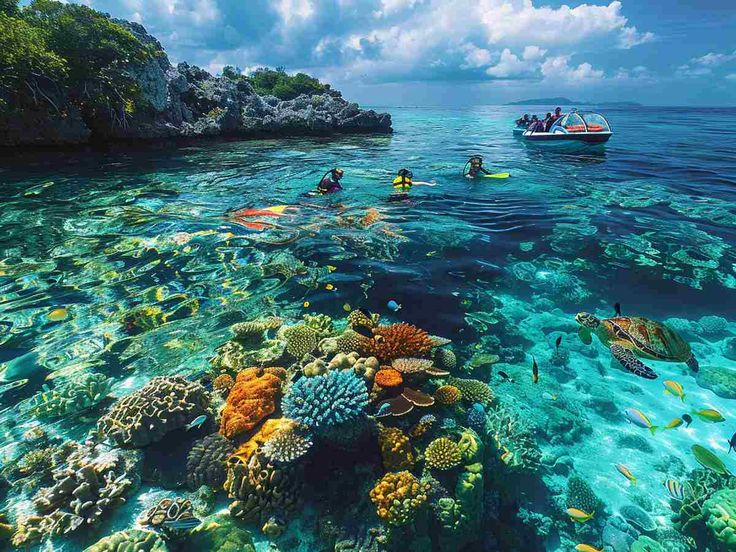
Andaman Tour Packages
Andaman tour packages are designed to offer travelers an unforgettable
experience in this tropical paradise. With its pristine beaches, lush
greenery, and vibrant marine life, the Andaman Islands are a popular
choice for tourists seeking a blend of relaxation and adventure.
more...
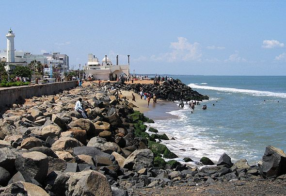
Pondicherry Tour Packages
Pondicherry tour packages are designed to offer travelers an
unforgettable experience in this charming coastal town. With its
unique blend of French colonial architecture, vibrant culture, and
serene beaches, Pondicherry is a popular choice for tourists seeking a
blend of relaxation and cultural exploration.
more...
Kerala Tour Packages
Kerala tour packages are designed to offer travelers an unforgettable
experience in this tropical paradise. With its serene backwaters, lush
greenery, and vibrant culture, Kerala is a popular choice for tourists
seeking a blend of relaxation and cultural exploration.
more...
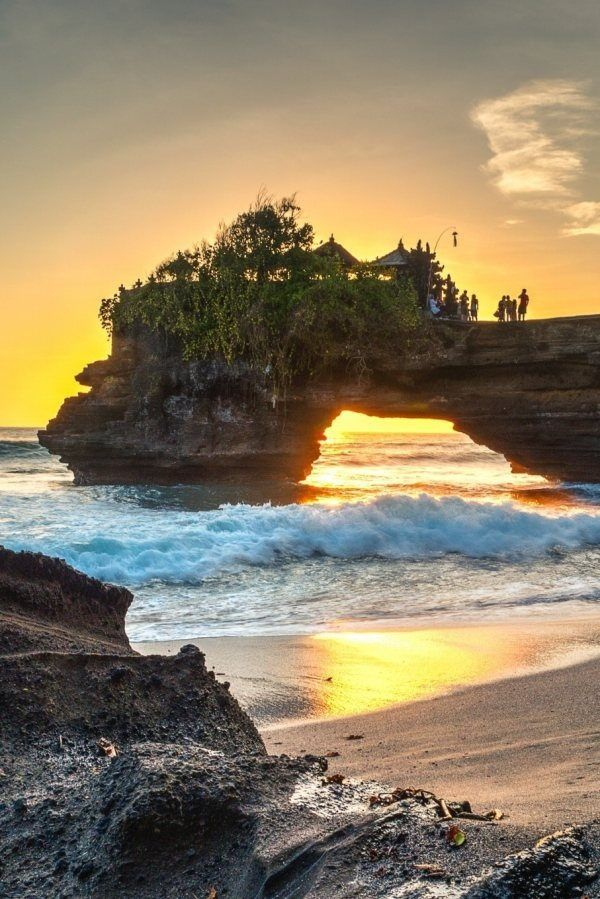
Daman and Diu
Daman and Diu tour packages are designed to offer travelers an
unforgettable experience in this coastal paradise. With its pristine
beaches, rich history, and vibrant culture, Daman and Diu are a
popular choice for tourists seeking a blend of relaxation and cultural
exploration. more...
Hill Station
Manali Tour Packages
Manali tour packages are designed to offer travelers an unforgettable
experience in this picturesque hill station. With its stunning
landscapes, vibrant culture, and thrilling adventure activities,
Manali is a popular choice for tourists seeking a blend of relaxation
and excitement. more...
Shimla Tour Packages
Shimla tour packages are designed to offer travelers an unforgettable
experience in this charming hill station. With its colonial
architecture, vibrant culture, and stunning landscapes, Shimla is a
popular choice for tourists seeking a blend of relaxation and cultural
exploration.
more...
Darjeeling Tour Packages
Darjeeling tour packages are designed to offer travelers an
unforgettable experience in this picturesque hill station. With its
stunning landscapes, vibrant culture, and thrilling adventure
activities, Darjeeling is a popular choice for tourists seeking a
blend of relaxation and excitement.
more...
Mussoorie Tour Packages
Mussoorie tour packages are designed to offer travelers an
unforgettable experience in this charming hill station. With its
stunning landscapes, vibrant culture, and thrilling adventure
activities, Mussoorie is a popular choice for tourists seeking a blend
of relaxation and excitement.
more...
Mahabaleshwar Tour Packages
Nainital tour packages are designed to offer travelers an
unforgettable experience in this picturesque hill station. With its
stunning landscapes, vibrant culture, and thrilling adventure
activities, Nainital is a popular choice for tourists seeking a blend
of relaxation and excitement.
more...
Pilgrimage
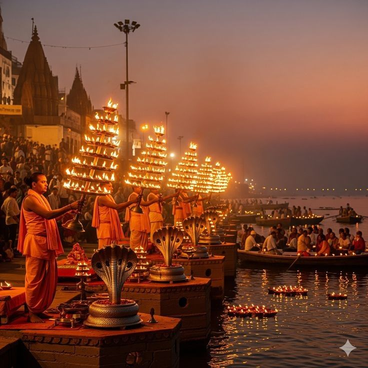
Varanasi Tour Packages
Varanasi tour packages are designed to offer travelers an
unforgettable experience in this ancient city. With its rich cultural
heritage, vibrant spiritual atmosphere, and stunning architecture,
Varanasi is a popular choice for tourists seeking a blend of cultural
exploration and spiritual enlightenment.
more...
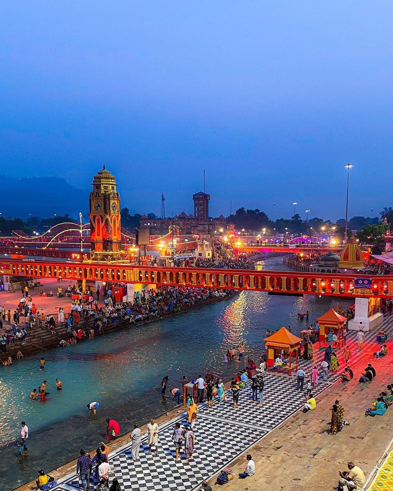
Haridwar Tour Packages
Haridwar tour packages are designed to offer travelers an
unforgettable experience in this sacred city. With its rich cultural
heritage, vibrant spiritual atmosphere, and stunning architecture,
Haridwar is a popular choice for tourists seeking a blend of cultural
exploration and spiritual enlightenment.
more...
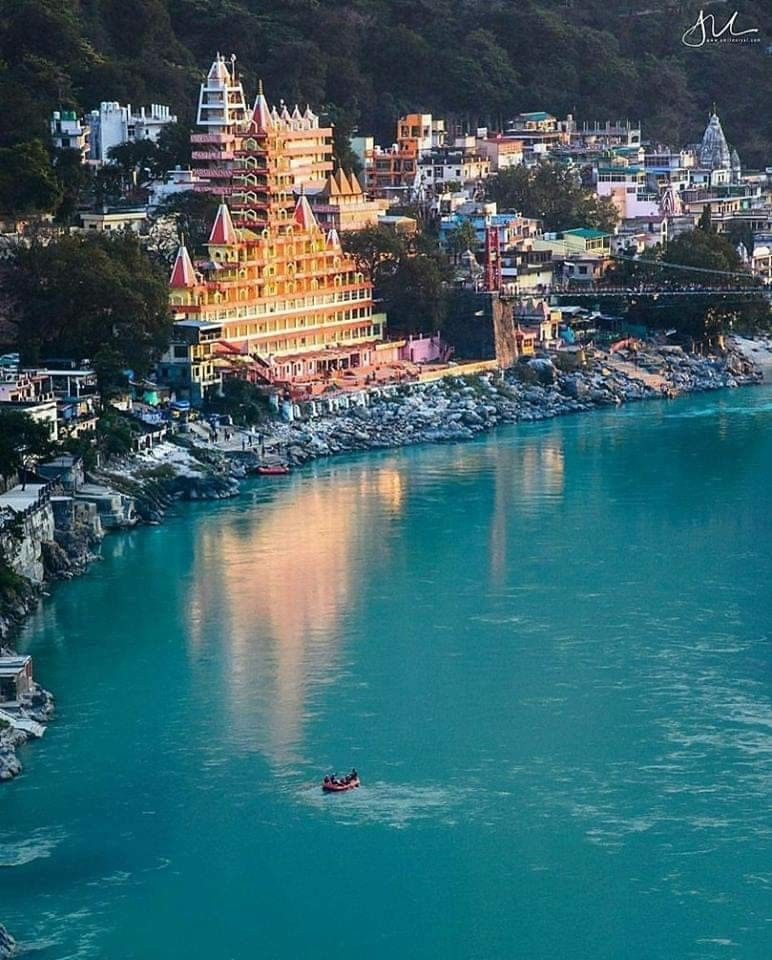
Rishikesh Tour Packages
Rishikesh tour packages are designed to offer travelers an
unforgettable experience in this spiritual city. With its rich
cultural heritage, vibrant spiritual atmosphere, and stunning natural
beauty, Rishikesh is a popular choice for tourists seeking a blend of
cultural exploration and spiritual enlightenment.
more...
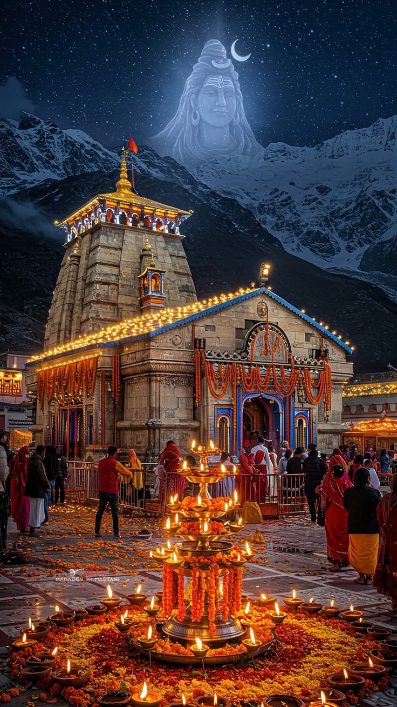
Kedarnath Tour Packages
Kedarnath tour packages are designed to offer travelers an
unforgettable experience in this sacred city. With its rich cultural
heritage, vibrant
more...
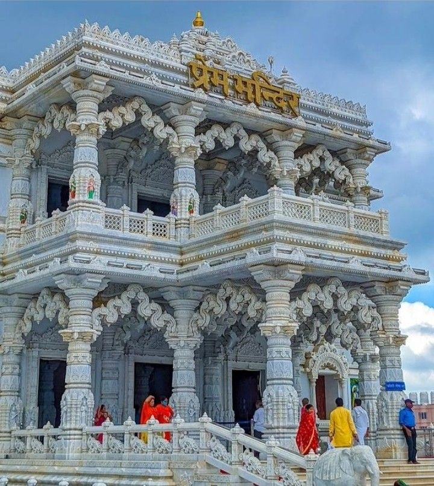
Mathura and Vrindavan Tour Packages
Mathura and Vrindavan tour packages are designed to offer travelers an
unforgettable experience in these sacred cities. With their rich
cultural heritage, vibrant spiritual atmosphere, and stunning
architecture, Mathura and Vrindavan are popular choices for tourists
seeking a blend of cultural exploration and spiritual enlightenment.
more...
Heritage
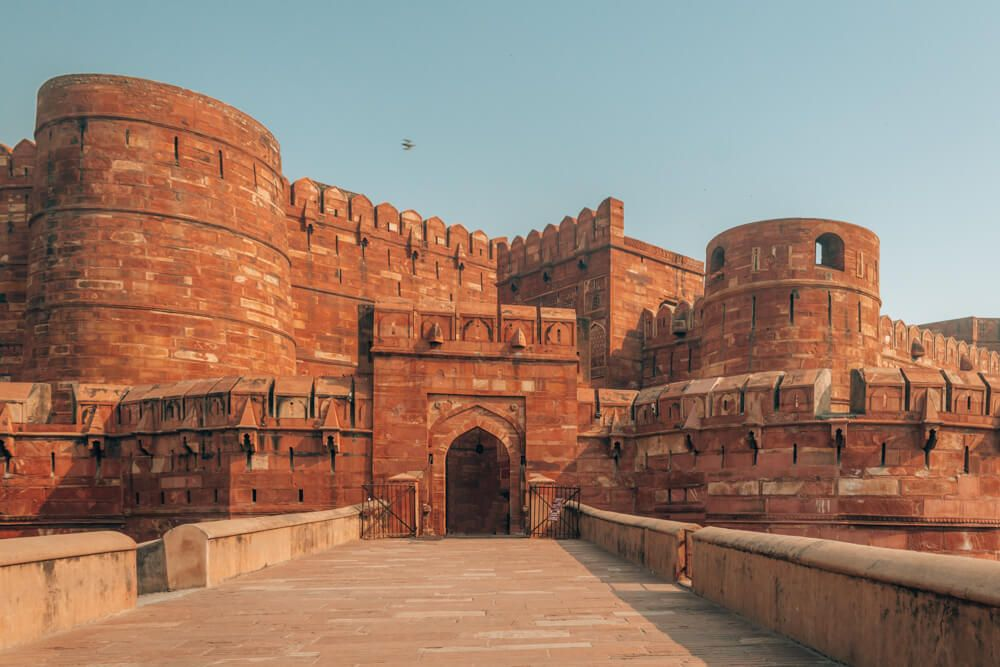
Agra Tour Packages
Agra tour packages are designed to offer travelers an unforgettable
experience in this historic city. With its rich cultural heritage,
vibrant atmosphere, and stunning architecture, Agra is a popular
choice for tourists seeking a blend of cultural exploration and
historical discovery.
more...
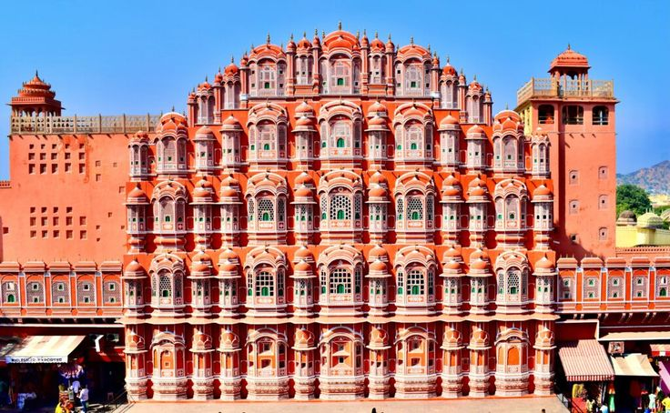
Jaipur Tour Packages
Jaipur tour packages are designed to offer travelers an unforgettable
experience in this vibrant city. With its rich cultural heritage,
vibrant atmosphere, and stunning architecture, Jaipur is a popular
choice for tourists seeking a blend of cultural exploration and
historical discovery.
more...
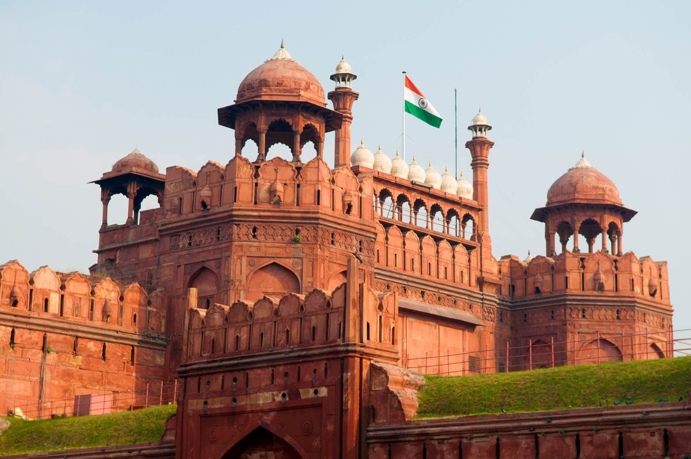
Delhi Tour Packages
Delhi tour packages are designed to offer travelers an unforgettable
experience in this bustling city. With its rich cultural heritage,
vibrant atmosphere, and stunning architecture, Delhi is a popular
choice for tourists seeking a blend of cultural exploration and
historical discovery.
more...
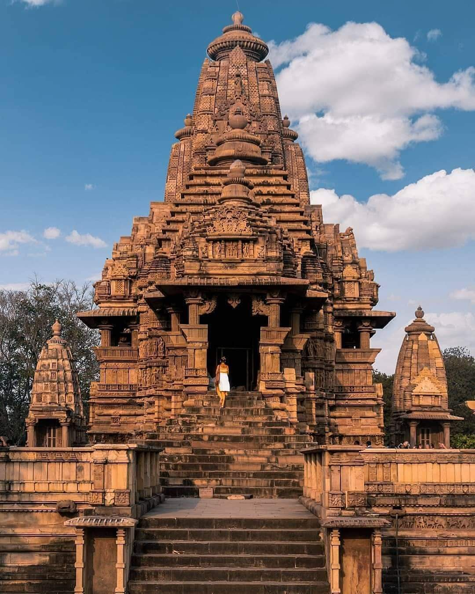
Khajuraho Tour Packages
Khajuraho tour packages are designed to offer travelers an
unforgettable experience in this historic city. With its rich cultural
heritage, vibrant atmosphere, and stunning architecture, Khajuraho is
a popular choice for tourists seeking a blend of cultural exploration
and historical discovery.
more...
Hampi Tour Packages
Hampi tour packages are designed to offer travelers an unforgettable
experience in this historic city. With its rich cultural heritage,
vibrant atmosphere, and stunning architecture, Hampi is a popular
choice for tourists seeking a blend of cultural exploration and
historical discovery.
more...
Adventure
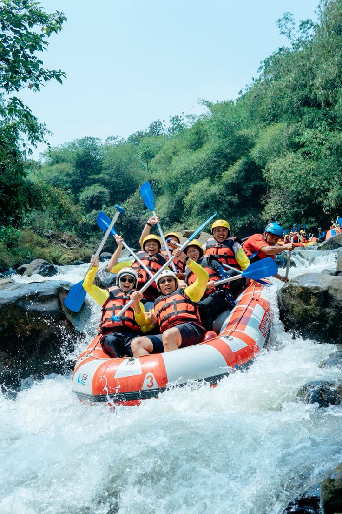
Rishikesh, Uttarakhand – The River Rafting Capital
Rishikesh, often called the adventure hub of India, is famous for
river rafting on the Ganga. The powerful rapids, along with stunning
Himalayan backdrops, make it a must-visit destination for
thrill-seekers.Apart from rafting, you can try bungee jumping, cliff
diving, and camping by the river. The spiritual aura of Rishikesh
blends beautifully with its adventurous vibe, making it perfect for
those who want both excitement and peace. It’s one of the highlights
of adventure tourism in India, attracting backpackers and families
alike.
more...
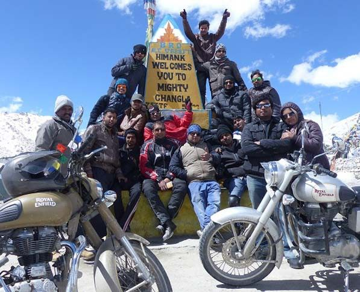
Leh-Ladakh – Land of High Passes and Motorbike Adventures
Leh-Ladakh is a dream for bikers and adventure lovers. Its rugged
landscapes, high-altitude passes, and breathtaking monasteries attract
thrill-seekers from around the world.Riding through Khardung La, one
of the world’s highest motorable roads, is an unforgettable
experience. Adventure junkies also explore river rafting in the
Zanskar, trekking in Nubra Valley, and camping by Pangong Lake. Ladakh
truly defines the spirit of raw and rugged adventure tourism in India.
more...
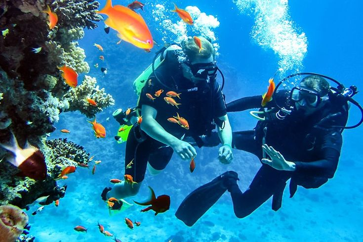
Andaman & Nicobar Islands – Scuba Diving and Water Adventures
if you’re looking for underwater adventure, the Andaman Islands are
unbeatable. With crystal-clear waters, coral reefs, and diverse marine
life, it’s a paradise for divers. Havelock Island is the most popular
spot for scuba diving and snorkeling. Kayaking through mangroves, jet
skiing, and sea walking are other exciting options. The Andamans
combine adventure with tropical beauty, making them one of the most
unique hidden gems in tourism in India.
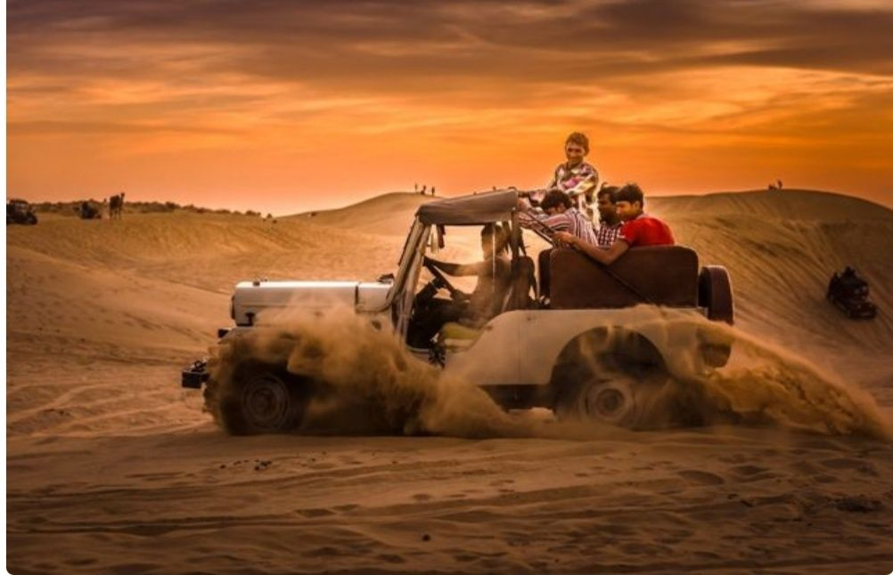
Rajasthan – Desert Safaris and Hot Air Balloons
Adventure in India isn’t just about mountains and seas; deserts bring
their own charm. Rajasthan offers thrilling experiences in the golden
sands of the Thar Desert.You can try camel safaris, dune bashing, and
camping under starry skies. Pushkar and Jaipur also offer hot air
balloon rides for breathtaking views. The desert adventures of
Rajasthan add variety and excitement to tourism in India, beyond the
usual forts and palaces.
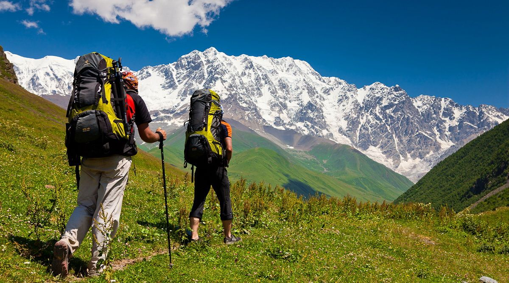
Sikkim – Treks and Mountain Expeditions
Sikkim, tucked in the Himalayas, is a paradise for trekkers and
mountaineers. Its landscapes are dotted with glaciers, alpine meadows,
and Buddhist monasteries.The Goecha La trek is one of the most famous
here, offering views of Mt. Kanchenjunga. Adventure lovers also try
river rafting in Teesta and paragliding over Gangtok. With its blend
of cultural richness and thrilling landscapes, Sikkim plays an
important role in adventure tourism in India a top choice for tourists
looking for excitement in tourism in India.